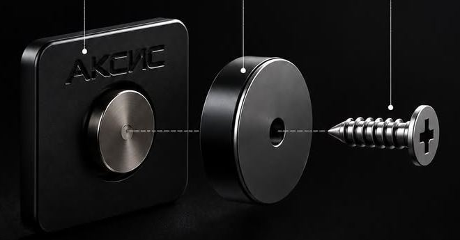
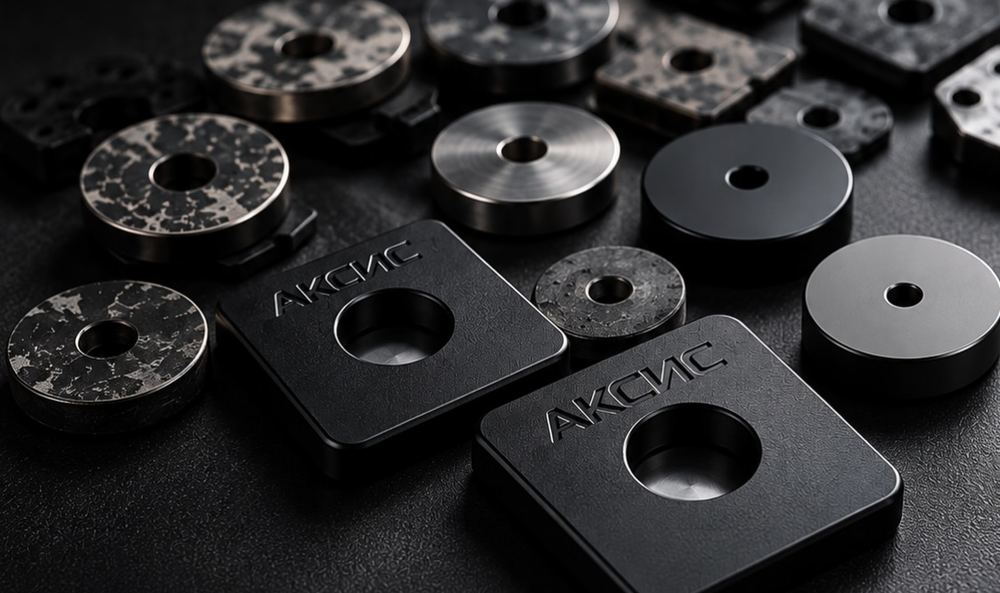
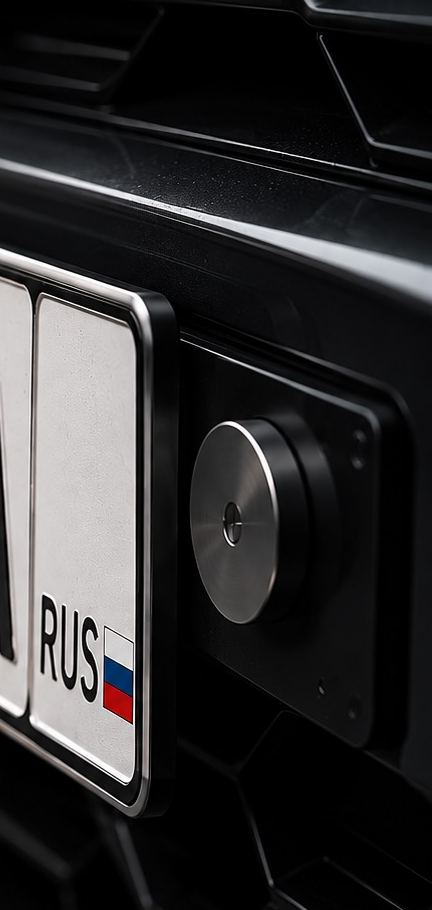
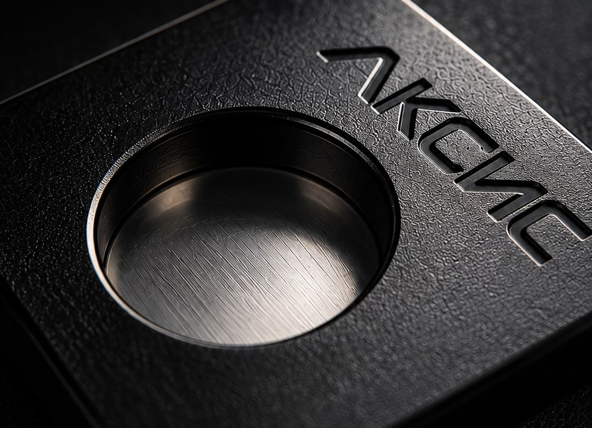

«Езжу на детейлинг раз в месяц — раньше каждый раз крутил отвёрткой. Теперь номер снимаю одной рукой, пока мастер встречает».
Снять и поставить — одним движением
Магнитные держатели номерного знака АКСИС. Металл, сильные магниты, 3M-скотч. Два года разработки и испытаний — от первых круглых прототипов до финальной конструкции.
- 2 500 ₽
- комплект на 2 номера
- 2 мин
- установка на номер
- 0
- инструментов для снятия
А 777 АА
33RUS
Потяните номер к магнитам ↑
Номер снимается
Мойка, детейлинг, полировка, оклейка плёнкой. Никаких отвёрток, сорванных саморезов и царапин вокруг номера. Потянули — номер у вас в руке. Поднесли — магниты сами поставили его ровно на место.
Саморезы и рамка
5–10 мин
АКСИС
≈2 сек
Чем магнитные держатели АКСИС лучше аналогов
АКСИС
Магнитная рамка
Саморезы
Снять номер без инструментовдаданет
Номер не закрыт рамкой — все символы видныдазависит от рамкида
Почти незаметно на автодагромоздкода
Металлический корпусдачаще пластик—
Испытано: мойка, снег, грязь, ДТПданеизвестнода
Без дырок в номереда, 3M-скотчданет
Конструкция: три детали,

- Площадка с магнитом Клеится на обратную сторону номера промышленным 3M-скотчем. Сверлить номер не нужно.
- Ответный магнит Металлическая «шайба» на штатном месте номера. Держит площадку мёртвой хваткой.
- Саморез в комплекте Крепит ответный магнит в заводские отверстия под номер. Ставится один раз.

разработки, десятки конструкций, материалов и магнитов
Мы начинали с круглых версий и перепробовали всё, пока не пришли к квадратной площадке с утопленным магнитом: она не проворачивается, равномерно держит номер и не видна снаружи.
За магнитные держатели лишают
Главный вопрос, который нам задают. Отвечаем по документам.

ГОСТ Р 50577-2018, прил. Ж
Допускает крепление номерного знака с помощью рамок и переходных конструктивных элементов — главное, чтобы символы, надпись RUS и флаг не были закрыты.
Позиция судов
Верховный суд разъяснил: магнитная рамка сама по себе не является нарушением и не относится к устройствам для сокрытия номера.
С АКСИС
Номер стоит на штатном месте, держатели спрятаны за ним — знак полностью открыт и читается.
Наказание по ст. 12.2 КоАП грозит за скрытый, нечитаемый или снятый в движении номер. Снимайте номер только на стоянке — на мойке, детейлинге, при ремонте.
Проверено в реальных условиях
Наши крепления прошли всё, с чем автомобиль сталкивается в повседневной жизни.
Установка магнитного крепления
- 01Снимите старое крепление
Открутите номер и штатную рамку, протрите место.
- 02Прикрутите ответные магниты
Саморезами из комплекта — в заводские отверстия под номер.
- 03Приклейте площадки к номеру
3M-скотч на обратную сторону, напротив магнитов.
- 04Поднесите номер — щёлк
Магниты сами притянут и выровняют знак.

Создано для тех,
Текстурированный металл, гравировка, полированный магнит. Это не пластиковая рамка с маркетплейса — это аксессуар, который приятно держать в руках.
Хочу такой комплектЧто говорят владельцы
2 500 ₽
×2номера
Один комплект — на передний и задний номер. Доставка по всей России.
Купить магнитное крепление номера
- 4 площадки с магнитом и 3M-скотчем
- 4 ответных магнита
- Саморезы и 3M-скотч
- Фирменная коробка АКСИС
- Напишите в Директ укажите количество комплектов
- Подтвердим заказ ответим на все вопросы
- Отправим удобным способом Озон · СДЭК · Почта России
Частые вопросы
Законно ли магнитное крепление номера?
Да. ГОСТ Р 50577-2018 (приложение Ж) допускает крепление знака через рамки и переходные конструктивные элементы, если номер не закрыт и читается. Верховный суд разъяснил, что магнитная рамка сама по себе не нарушение. Наказывают за скрытый, нечитаемый или снятый в движении номер — с АКСИС знак стоит на штатном месте и полностью открыт.
Не слетит ли номер на мойке, кочках или в мороз?
Крепления испытаны в дождь, снег, грязь, жару и даже в ДТП — номер оставался на месте. Силу магнитов подбирали два года на десятках прототипов.
Могут ли украсть номер?
Снять номер можно только зная, где он держится и с каким усилием тянуть. Если ставите машину надолго в сомнительном месте — номер можно забрать с собой за секунду.
Нужно ли сверлить номер или бампер?
Нет. Площадки клеятся на номер 3M-скотчем, а ответные магниты крепятся в заводские отверстия под номерной знак.
Подойдёт на мою машину?
На большинство легковых авто — да, крепление ставится на штатное место номера. Сомневаетесь — пришлите фото места под номер в Директ, подскажем.
Сколько стоит и как доставляете?
Комплект на два номерных знака — 2 500 ₽. Отправляем по всей России через Озон, СДЭК и Почту России. Заказ — в Директ Instagram @aksis.ru.